比赛列表
共 1010 场44 场44 场88 场21282 场16212 场085 场078 场089 场060 场093 场
胜平负队名旁为近 5 场
11/27 · 0 场93 场未开赛
16:40澳超麦克阿瑟VS墨尔本城仅赛程
18:30阿塞拜疆超级联赛伊米斯利 VS
VS 巴库萨法仅赛程
巴库萨法仅赛程
19:00乌克兰超级联赛利维贝雷VS科瓦利夫卡科洛斯仅赛程
19:00亚美尼亚超级联赛休尼克VS凡体育仅赛程
19:00越南超级联赛乂安蓝江 VS
VS 富董仅赛程
富董仅赛程
19:00越南超级联赛南定VS 河内公安仅赛程
河内公安仅赛程
19:30伊朗波斯湾职业…佩坎 VS
VS 胡齐斯坦钢铁仅赛程
胡齐斯坦钢铁仅赛程
19:30伊朗波斯湾职业…沙姆斯阿扎尔加兹温VS 海巴尔霍拉马巴德仅赛程
海巴尔霍拉马巴德仅赛程
19:30新加坡超级联赛芽笼国际
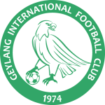
VS丹戎巴葛联仅赛程20:00乌兹别克斯坦超…布哈拉 VS马沙尔仅赛程
VS马沙尔仅赛程
20:00乌兹别克斯坦超…浩罕1912VS 花剌子模仅赛程
花剌子模仅赛程
20:00泰国超级联赛乌泰他尼VS四色菊联仅赛程
20:15沙特联卡路特 VS
VS 赛哈特海湾仅赛程
赛哈特海湾仅赛程
20:15马来西亚超级联赛文莱DPMM VS
VS 吉兰丹红勇士仅赛程
吉兰丹红勇士仅赛程
20:15沙职拉斯永恒VS赛哈海湾仅赛程
20:45伊朗波斯湾职业…阿拉克铝业VS波斯波利斯仅赛程
21:00U17世界杯哥伦比亚U17 VS
VS 塞尔维亚U17仅赛程
塞尔维亚U17仅赛程
21:00U17世界杯洪都拉斯U17 VS
VS 日本U17仅赛程
日本U17仅赛程
21:00伊拉克联赛塔拉巴VS巴士拉港仅赛程
21:00伊朗波斯湾职业…胡齐斯坦独立VS 马拉万仅赛程
马拉万仅赛程
21:00卡塔尔星联赛赛利扬 VS加拉法仅赛程
VS加拉法仅赛程
21:30伊拉克联赛扎胡 VS卡尔巴拉仅赛程
VS卡尔巴拉仅赛程
22:00U17世界杯哥斯达黎加U17 VS
VS 巴西U17仅赛程
巴西U17仅赛程
22:00U17世界杯爱尔兰U17VS坦桑尼亚U17仅赛程
22:00印度超级联赛喀什国际 VS
VS 丘吉尔兄弟仅赛程
丘吉尔兄弟仅赛程
22:00约旦联赛约旦青年VS萨尔特仅赛程
22:20沙特联胡巴尔卡德西亚 VS费哈仅赛程
VS费哈仅赛程
22:20沙职胡巴卡德VS迈季宽广仅赛程
23:00U17世界杯阿尔及利亚U17 VS
VS 美国U17仅赛程
美国U17仅赛程
23:00U17世界杯阿尔及利亚U17VS多米尼加共和国U17仅赛程
23:00U17世界杯黑山U17VS 智利U17仅赛程
智利U17仅赛程
23:00巴林超级联赛东里法VS 马卡巴伊蒂法克仅赛程
马卡巴伊蒂法克仅赛程
23:00巴林超级联赛马尔基亚 VS麦纳麦仅赛程
VS麦纳麦仅赛程
23:00阿塞拜疆超级联赛巴库石油工人 VS
VS
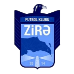
兹拉仅赛程23:30伊拉克联赛北方天然气VS 安巴尔卡尔马仅赛程
安巴尔卡尔马仅赛程
23:30卡塔尔星联赛卢赛尔体育VS 多哈阿拉伯人仅赛程
多哈阿拉伯人仅赛程
23:30罗甲克卢日大学 VS塞普西仅赛程
VS塞普西仅赛程
00:00U17世界杯克罗地亚U17 VS古巴U17仅赛程
VS古巴U17仅赛程
00:00U17世界杯塔吉克斯坦U17 VS
VS 塞内加尔U17仅赛程
塞内加尔U17仅赛程
00:30卡塔尔乙级联赛乌姆沙拉尔 VS
VS 赖扬B队仅赛程
赖扬B队仅赛程
00:30卡塔尔乙级联赛梅赛梅尔 VS卡塔尔23仅赛程
VS卡塔尔23仅赛程
01:30沙特联哈马赫费萨利 VS
VS 迪里耶仅赛程
迪里耶仅赛程
01:30沙职哈马费萨VSDraih仅赛程
01:45欧协亚布洛内茨VS卢加诺仅赛程
01:45欧协哈茨 VS
VS 摩纳哥仅赛程
摩纳哥仅赛程
01:45欧协布兰 VS奥胡斯仅赛程
VS奥胡斯仅赛程
01:45欧协布莱顿 VSCS克拉约瓦大学仅赛程
VSCS克拉约瓦大学仅赛程
01:45欧协帕福斯 VS中日德兰仅赛程
VS中日德兰仅赛程
01:45欧协考诺萨基列斯 VS里加仅赛程
VS里加仅赛程
01:45欧协艾格纳蒂亚 VS林肯红魔仅赛程
VS林肯红魔仅赛程
01:45欧协萨布尔塔洛 VS
VS 赫塔费仅赛程
赫塔费仅赛程
01:45欧协阿贾克斯VS图恩仅赛程
01:45欧联FC萨尔茨堡VS 亚拉腊仅赛程
亚拉腊仅赛程
01:45欧联圣吉罗斯 VS
VS 波兹南仅赛程
波兹南仅赛程
01:45欧联塞尔塔 VS
VS 伯恩茅斯仅赛程
伯恩茅斯仅赛程
01:45欧联奥林匹亚VSAC米兰仅赛程
01:45欧联比尔森VS 本菲卡仅赛程
本菲卡仅赛程
01:45欧联萨迪纳摩VS 勒沃库森仅赛程
勒沃库森仅赛程
01:45欧联贝西克塔 VS贝尔谢巴工人仅赛程
VS贝尔谢巴工人仅赛程
01:45欧联马赛 VS索列夫仅赛程
VS索列夫仅赛程
01:45欧协联Kauno ŽalgirisVS里加FC仅赛程
01:45欧协联Egnatia RrogozhinëVS红色小鬼仅赛程
01:45欧协联SaburtaloVS赫塔费仅赛程
02:00丹甲奥尔堡 VS埃斯比约仅赛程
VS埃斯比约仅赛程
03:00英超国际杯斯托克城U21VS AC米兰B队仅赛程
AC米兰B队仅赛程
03:00英超联赛杯伯恩利U21VS 狼队 U21仅赛程
狼队 U21仅赛程
04:00欧协北西兰VS帕纳辛纳仅赛程
04:00欧协哈伊杜克VS 圣图尔登仅赛程
圣图尔登仅赛程
04:00欧协埃斯卡尔德斯VS 哥本哈根仅赛程
哥本哈根仅赛程
04:00欧协巴尼亚卢卡VS 亚特兰大仅赛程
亚特兰大仅赛程
04:00欧协布拉加VS古比斯仅赛程
04:00欧协弗赖堡 VS
VS 特温特仅赛程
特温特仅赛程
04:00欧协根特 VS
VS 贝尔格莱德红星仅赛程
贝尔格莱德红星仅赛程
04:00欧协索陆军 VS特拉布宗仅赛程
VS特拉布宗仅赛程
04:00欧联OFI克里特 VS
VS 安德莱仅赛程
安德莱仅赛程
04:00欧联奈梅亨 VS
VS 雷恩仅赛程
雷恩仅赛程
04:00欧联尤文图斯 VS
VS 奥莫尼亚仅赛程
奥莫尼亚仅赛程
04:00欧联布斯巴达 VS
VS 阿尔克马仅赛程
阿尔克马仅赛程
04:00欧联托林斯VS 凯尔特人仅赛程
凯尔特人仅赛程
04:00欧联桑德兰 VS
VS 乔治罗尼亚仅赛程
乔治罗尼亚仅赛程
04:00欧联水晶宫 VS
VS 皇家社会仅赛程
皇家社会仅赛程
04:00欧联费伦茨VS 采列仅赛程
采列仅赛程
04:00欧联里昂 VS利勒斯特仅赛程
VS利勒斯特仅赛程
04:00欧联霍芬海姆VS 格拉茨风暴仅赛程
格拉茨风暴仅赛程
04:00英甲唐卡斯特VS 哈德斯仅赛程
哈德斯仅赛程
04:00欧罗巴桑德兰VS比亚韦仅赛程
04:00欧协联布拉迪斯 VS库奥皮奥仅赛程
VS库奥皮奥仅赛程
04:00欧协联Inter ClubVS哥本哈根仅赛程
04:00欧协联巴战士VS亚特兰大仅赛程
06:00智利乙级联赛圣地亚哥流浪者VS 智利雷科莱塔仅赛程
智利雷科莱塔仅赛程
06:30巴拉圭杯波特诺 VS
VS 亚松森自由仅赛程
亚松森自由仅赛程
07:00巴甲圣保罗 VS雷莫仅赛程
VS雷莫仅赛程
—国际赛玻利维亚 VS
VS 乌拉圭仅赛程
乌拉圭仅赛程
11/26 · 0 场60 场未开赛
09:30哥伦比亚甲级联赛麦德林国民竞技VS麦德林独立仅赛程
16:30印尼甲级联赛婆罗洲 VS
VS 佩斯塔坦格朗仅赛程
佩斯塔坦格朗仅赛程
18:00亚冠二级古晋城VS 金边皇冠仅赛程
金边皇冠仅赛程
18:00亚冠二级江原FC VS
VS 杰志仅赛程
杰志仅赛程
18:00亚冠二级淡宾尼士 VS
VS 上海申花仅赛程
上海申花仅赛程
18:00亚冠乙Kuching FAVSCrown仅赛程
20:15亚冠二级BG巴吞联VS 狮城水手仅赛程
狮城水手仅赛程
20:15亚冠二级大埔VS 阿德莱德仅赛程
阿德莱德仅赛程
20:15亚冠二级柴桢VS 町田泽维仅赛程
町田泽维仅赛程
20:15亚冠乙Svay RiengVS町田泽维仅赛程
20:45伊朗波斯湾职业…查多马卢 VS沙赫尔巴巴克铜业仅赛程
VS沙赫尔巴巴克铜业仅赛程
21:00U17世界杯新西兰U17 VS
VS 比利时U17仅赛程
比利时U17仅赛程
21:00U17世界杯越南U17 VS马里U17仅赛程
VS马里U17仅赛程
22:00U17世界杯乌兹别克斯坦U17VS 意大利U17仅赛程
意大利U17仅赛程
22:00U17世界杯牙买加U17 VS
VS 科特迪瓦U17仅赛程
科特迪瓦U17仅赛程
22:15卡塔尔乙级联赛穆艾德尔VS
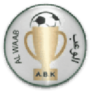
阿尔瓦布仅赛程22:25沙特联哈萨征服VS利雅得仅赛程
23:00U17世界杯中国U17VS 斐济U17仅赛程
斐济U17仅赛程
23:00U17世界杯摩洛哥U17 VS
VS 西班牙U17仅赛程
西班牙U17仅赛程
23:00约旦联赛巴卡VS 安曼半岛仅赛程
安曼半岛仅赛程
23:05沙特联艾卜哈VS 利雅得青年仅赛程
利雅得青年仅赛程
23:30欧协阿拉木图 VS
VS 米亚尔比仅赛程
米亚尔比仅赛程
00:00亚冠二级慕哈瑞克 VS阿尔卡达格仅赛程
VS阿尔卡达格仅赛程
00:00亚冠二级科威特竞技 VS
VS 阿尔瓦赫达仅赛程
阿尔瓦赫达仅赛程
00:00亚冠二级约旦费萨利VS 赖扬仅赛程
赖扬仅赛程
00:00亚冠二级阿尔贾兹拉VS戈尔戈哈尔仅赛程
00:00亚冠乙科威特SCVS阿布联仅赛程
00:00亚冠乙FaisalyVS赖扬仅赛程
00:00亚冠乙穆哈拉格VS阿卡达格仅赛程
00:00亚冠乙贾兹拉VSGol Gohar仅赛程
00:30卡塔尔乙级联赛阿尔比达VS马克希亚仅赛程
00:30卡塔尔乙级联赛阿尔豪尔VS 阿尔沙马尔B队仅赛程
阿尔沙马尔B队仅赛程
01:00斯洛文尼亚杯布拉沃 VS
VS
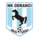
奥德兰齐仅赛程01:45欧冠斯拉维亚 VS比利亚雷仅赛程
VS比利亚雷仅赛程
01:45欧冠萨巴VS 巴塞罗那仅赛程
巴塞罗那仅赛程
02:15亚冠二级布赖代合作VS 阿曼纳达仅赛程
阿曼纳达仅赛程
02:15亚冠乙布赖合作VSNahda仅赛程
03:45英冠伯恩利 VS伯明翰仅赛程
VS伯明翰仅赛程
03:45英冠博尔顿 VS
VS 西布朗仅赛程
西布朗仅赛程
03:45英冠沃特福德 VS
VS 布莱克本仅赛程
布莱克本仅赛程
04:00欧冠国际米兰VS斯图加特仅赛程
04:00欧冠巴黎圣日耳曼 VS罗马仅赛程
VS罗马仅赛程
04:00欧冠布鲁日 VS
VS 利物浦仅赛程
利物浦仅赛程
04:00欧冠葡萄牙体育 VS
VS 曼联仅赛程
曼联仅赛程
04:00欧冠里尔 VS
VS 拜仁仅赛程
拜仁仅赛程
04:00欧冠顿涅茨克矿工 VS
VS 费内巴切仅赛程
费内巴切仅赛程
04:00欧冠马竞VS维京仅赛程
04:00英冠斯托克城 VS
VS 米尔沃尔仅赛程
米尔沃尔仅赛程
04:00欧冠里斯本VS曼联仅赛程
05:00厄瓜多尔甲级联赛瓜亚基尔VS 山谷独立仅赛程
山谷独立仅赛程
05:00巴拉圭甲级联赛亚松森国民 VS鲁比奥尼尤仅赛程
VS鲁比奥尼尤仅赛程
05:00巴拉圭甲级联赛亚松森自由VS 五月二日仅赛程
五月二日仅赛程
05:00巴拉圭甲级联赛卢克尼奥体育VS亚松森奥林匹亚仅赛程
05:00巴拉圭甲级联赛巴拉圭圣洛伦索VS 亚美利亚人仅赛程
亚美利亚人仅赛程
05:00巴拉圭甲级联赛波特诺VS瓜拉尼仅赛程
05:00巴拉圭甲级联赛特立尼登斯VS 雷科莱塔仅赛程
雷科莱塔仅赛程
07:00巴甲米竞技 VS
VS 科林蒂安仅赛程
科林蒂安仅赛程
07:00玻利维亚职业联…皇家波托西 VS
VS 时刻准备仅赛程
时刻准备仅赛程
07:20哥伦比亚甲级联赛圣菲 VS
VS 卡尔达斯仅赛程
卡尔达斯仅赛程
08:00阿甲博卡青年 VS
VS 独立里瓦达维亚仅赛程
独立里瓦达维亚仅赛程
11/25 · 0 场89 场未开赛
09:30哥伦比亚甲级联赛卡利美洲 VS
VS 卡利体育仅赛程
卡利体育仅赛程
11:00美职联圣何塞VS 休斯敦迪纳摩仅赛程
休斯敦迪纳摩仅赛程
15:45亚冠二级墨胜利 VS越南电信仅赛程
VS越南电信仅赛程
17:30日职乙FC今治VS宫崎惊奇牛鸟仅赛程
17:30日职乙万劳雷八户 VS
VS 新泻天鹅仅赛程
新泻天鹅仅赛程
17:30日乙VanraureVS新潟天鹅仅赛程
18:00亚冠大阪钢巴VS曼谷港务仅赛程
18:00亚冠鹿岛鹿角 VS
VS 全北现代仅赛程
全北现代仅赛程
18:00日职乙北海道札幌冈萨多 VS
VS 藤枝MYFC仅赛程
藤枝MYFC仅赛程
18:00日职乙大宫松鼠RB VS德岛漩涡仅赛程
VS德岛漩涡仅赛程
18:00日职乙山形山神 VS磐田喜悦仅赛程
VS磐田喜悦仅赛程
18:00日职乙枥木城VS 秋田蓝色闪电仅赛程
秋田蓝色闪电仅赛程
18:00日职乙横滨FC VS仙台七夕仅赛程
VS仙台七夕仅赛程
18:00日职乙湘南比马 VS甲府风林仅赛程
VS甲府风林仅赛程
18:00日职乙磐城VS 富山胜利仅赛程
富山胜利仅赛程
18:00日职乙鸟栖沙岩 VS大分三神仅赛程
VS大分三神仅赛程
18:00日职联FC东京 VS
VS 广岛三箭仅赛程
广岛三箭仅赛程
18:00日职联冈山绿雉 VS清水心跳仅赛程
VS清水心跳仅赛程
18:00日职联千叶市原 VS
VS 名古屋鲸仅赛程
名古屋鲸仅赛程
18:00日职联水户蜀葵 VS东京绿茵仅赛程
VS东京绿茵仅赛程
18:00日职联福冈黄蜂 VS
VS 横滨水手仅赛程
横滨水手仅赛程
18:00日职联长崎航海 VS
VS 川崎前锋仅赛程
川崎前锋仅赛程
18:30日职联浦和红钻 VS
VS 大阪樱花仅赛程
大阪樱花仅赛程
19:00乌克兰超级联赛克里夫巴斯VS 哈尔科夫仅赛程
哈尔科夫仅赛程
19:00波兰杯希罗达波罗尼亚VS克莱切夫猎鹰仅赛程
20:10沙特甲级联赛安瓦尔VS 詹达勒体育仅赛程
詹达勒体育仅赛程
20:10沙特甲级联赛布凯里耶 VS麦加统一仅赛程
VS麦加统一仅赛程
20:15亚冠二级万隆 VS
VS FC首尔仅赛程
FC首尔仅赛程
20:30U17世界杯乌干达U17VS新喀里多尼亚U17仅赛程
20:30U17世界杯厄瓜多尔U17 VS
VS 韩国U17仅赛程
韩国U17仅赛程
21:00黑山甲级联赛博凯利VS
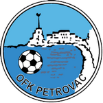
彼得罗瓦茨仅赛程21:00黑山甲级联赛蒂瓦特阿森纳 VS德西奇仅赛程
VS德西奇仅赛程
21:30U17世界杯乌拉圭U17 VS
VS 法国U17仅赛程
法国U17仅赛程
21:30U17世界杯海地U17 VS沙特阿拉伯U17仅赛程
VS沙特阿拉伯U17仅赛程
21:45亚冠二级纳萨夫 VS
VS 哈利迪亚仅赛程
哈利迪亚仅赛程
21:45亚冠乙纳萨夫VS哈马永恒仅赛程
22:15卡塔尔乙级联赛阿尔哈赖提亚特VS 加拉法B队仅赛程
加拉法B队仅赛程
22:30U17世界杯巴拿马U17 VS
VS 埃及U17仅赛程
埃及U17仅赛程
22:30U17世界杯希腊U17 VS
VS 卡塔尔U17仅赛程
卡塔尔U17仅赛程
23:00斯洛文尼亚杯塞扎纳塔博尔VS富日纳尔仅赛程
23:10沙特甲级联赛阿尔乌拉
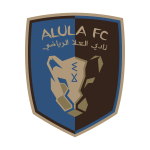
VS阿达拉仅赛程23:30U17世界杯丹麦U17 VS阿根廷U17仅赛程
VS阿根廷U17仅赛程
23:30U17世界杯澳大利亚U17 VS莫桑比克U17仅赛程
VS莫桑比克U17仅赛程
00:00亚冠迪拜国民青年 VS胡巴尔卡德西亚仅赛程
VS胡巴尔卡德西亚仅赛程
00:00亚冠二级锡卜 VS
VS 巴格达警察仅赛程
巴格达警察仅赛程
00:00斯洛伐克杯日利纳 VS鲁容贝罗克仅赛程
VS鲁容贝罗克仅赛程
00:00亚冠乙SeebVS鲁警察仅赛程
01:45欧冠加拉塔萨VS 维拉仅赛程
维拉仅赛程
01:45欧冠博德闪耀 VSLASK林茨仅赛程
VSLASK林茨仅赛程
02:15亚冠利雅得胜利 VS萨德仅赛程
VS萨德仅赛程
03:00英超联赛杯伊普斯维奇U21 VS
VS 布罗姆利U21仅赛程
布罗姆利U21仅赛程
03:00英超联赛杯哈德斯菲尔德U21 VS斯旺西U21仅赛程
VS斯旺西U21仅赛程
03:00英超联赛杯女王公园巡游者U21 VS
VS 南安普敦U21仅赛程
南安普敦U21仅赛程
03:00英超联赛杯谢菲尔德联U21 VS米尔沃尔U21仅赛程
VS米尔沃尔U21仅赛程
03:00英锦赛弗利特伍德 VS
VS 利兹联 U21仅赛程
利兹联 U21仅赛程
03:00英锦赛牛津联 VS托特纳姆热刺 U21仅赛程
VS托特纳姆热刺 U21仅赛程
03:00英锦赛特兰米尔 VS
VS 埃弗顿 U21仅赛程
埃弗顿 U21仅赛程
03:00英锦赛索尔福德城 VS桑德兰U21已延期
VS桑德兰U21已延期
03:00英锦标赛牛津联VSSpurs仅赛程
03:00英锦标赛福利特VSLeeds仅赛程
03:00英锦标赛特兰米尔VSEverton仅赛程
03:00英锦标赛索尔福德VSSunderland仅赛程
03:45威尔士超级联赛霍利韦尔 VS
VS 宾尼邦特仅赛程
宾尼邦特仅赛程
03:45苏超希伯尼安 VS邓迪仅赛程
VS邓迪仅赛程
03:45英乙克劳利VS 巴尼特仅赛程
巴尼特仅赛程
03:45英乙维尔港 VS
VS 北安普敦仅赛程
北安普敦仅赛程
03:45英冠卡迪夫城 VS普雷斯顿仅赛程
VS普雷斯顿仅赛程
03:45英冠布城 VS
VS 雷克斯仅赛程
雷克斯仅赛程
03:45英冠朴次茅斯 VS
VS 西汉姆联仅赛程
西汉姆联仅赛程
03:45英冠查尔顿 VS
VS 林肯城仅赛程
林肯城仅赛程
03:45英冠米堡VS斯旺西仅赛程
03:45英冠诺维奇 VS女王公园巡游者仅赛程
VS女王公园巡游者仅赛程
03:45英冠谢菲尔德联 VS
VS 南安普敦仅赛程
南安普敦仅赛程
03:45英甲布拉德福 VS
VS 巴恩斯利仅赛程
巴恩斯利仅赛程
03:45英甲布罗姆利VS威科姆仅赛程
03:45英甲布莱克浦 VS
VS 莱切斯特仅赛程
莱切斯特仅赛程
03:45英甲斯蒂夫尼奇 VS
VS 谢周三仅赛程
谢周三仅赛程
04:00欧冠布拉迪斯VS皇家贝蒂斯仅赛程
04:00欧冠曼城VS那不勒斯仅赛程
04:00欧冠皇家马德里VS PSV埃因霍温仅赛程
PSV埃因霍温仅赛程
04:00欧冠科莫VSAEK雅典仅赛程
04:00欧冠莱红牛VS朗斯仅赛程
04:00欧冠费耶诺德 VS
VS 波尔图仅赛程
波尔图仅赛程
04:00欧冠阿森纳 VS
VS 多特蒙德仅赛程
多特蒙德仅赛程
04:00苏超格拉斯哥流浪者 VS
VS 阿伯丁仅赛程
阿伯丁仅赛程
04:00英冠狼队 VS德比郡仅赛程
VS德比郡仅赛程
05:00巴甲沙佩科VS 帕梅拉斯仅赛程
帕梅拉斯仅赛程
06:00智利杯科金博联VS 拉卡莱拉联合仅赛程
拉卡莱拉联合仅赛程
07:20哥伦比亚甲级联赛百万富翁VS布卡拉曼加仅赛程
11/24 · 0 场78 场未开赛
09:00美职联圣路易斯城VS 洛杉矶FC仅赛程
洛杉矶FC仅赛程
15:45亚冠纽卡斯尔喷气机 VS柏太阳神仅赛程
VS柏太阳神仅赛程
18:00亚冠京都 VS浦项制铁仅赛程
VS浦项制铁仅赛程
18:00亚冠大田市民 VS
VS 北京国安仅赛程
北京国安仅赛程
20:15亚冠上海海港 VS
VS 布里兰仅赛程
布里兰仅赛程
20:15亚冠叻丕府VS柔佛仅赛程
20:15亚冠河内公安VS 神户胜利仅赛程
神户胜利仅赛程
20:15沙特甲级联赛布赖代先锋 VS
VS
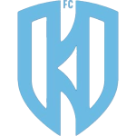
奈季兰沟渠仅赛程20:15亚冠精英CANDVS神户胜利仅赛程
20:20沙特甲级联赛欧鲁巴赫 VS
VS 奈季马仅赛程
奈季马仅赛程
20:20沙特甲级联赛贾巴莱因VS 祖尔菲仅赛程
祖尔菲仅赛程
20:30U17世界杯哥斯达黎加U17VS爱尔兰U17仅赛程
20:30U17世界杯委内瑞拉U17 VS
VS 罗马尼亚U17仅赛程
罗马尼亚U17仅赛程
21:00U17世界杯日本U17VS塞尔维亚U17仅赛程
21:15乌兹别克斯坦杯安集延 VS塔什干火车头仅赛程
VS塔什干火车头仅赛程
21:15乌兹别克斯坦杯阿尔马利克VS 纳曼干纳弗巴霍仅赛程
纳曼干纳弗巴霍仅赛程
21:30U17世界杯Mexico U17 VS
VS 喀麦隆U17仅赛程
喀麦隆U17仅赛程
21:45亚冠二级东孟加拉B队VS侯赛因仅赛程
21:45亚冠乙East BengalVSHussein仅赛程
22:00印度超级联赛东北联VS德里仅赛程
22:00意乙克雷莫内塞 VS阿韦利诺仅赛程
VS阿韦利诺仅赛程
22:00意乙切塞纳VS阿斯科利仅赛程
22:00意乙尤维斯塔比亚 VS卡坦扎罗仅赛程
VS卡坦扎罗仅赛程
22:00意乙巴勒莫VS南蒂罗尔仅赛程
22:00意乙帕多瓦VS桑普多利亚仅赛程
22:00意乙恩特拉 VS
VS 维罗纳仅赛程
维罗纳仅赛程
22:00意乙曼托瓦 VS
VS 阿雷佐仅赛程
阿雷佐仅赛程
22:00意乙比萨 VS
VS 摩德纳仅赛程
摩德纳仅赛程
22:00意乙维琴察 VS卡拉拉仅赛程
VS卡拉拉仅赛程
22:00意乙贝内文托 VS
VS 恩波利仅赛程
恩波利仅赛程
22:30U17世界杯多米尼加共和国U17VS智利U17仅赛程
22:30U17世界杯美国U17VS智利U17仅赛程
22:30沙特甲级联赛哈杰尔 VS
VS 塔伊仅赛程
塔伊仅赛程
23:00U17世界杯巴西U17VS坦桑尼亚U17仅赛程
23:30U17世界杯洪都拉斯U17VS哥伦比亚U17仅赛程
23:30U17世界杯阿尔及利亚U17VS黑山U17仅赛程
00:00亚冠大不里士拖拉机 VS迪拜连接仅赛程
VS迪拜连接仅赛程
00:00亚冠艾因 VS
VS 德黑兰独立仅赛程
德黑兰独立仅赛程
00:00亚冠阿尔沙马尔VS吉达国民仅赛程
00:00保加利亚甲级联赛卢多戈雷VS鲁塞多瑙仅赛程
00:00亚冠精英ShamalVS吉达国民仅赛程
00:30斯洛文尼亚甲级…科佩尔 VS阿卢米尼仅赛程
VS阿卢米尼仅赛程
01:00克罗地亚甲级联赛斯拉文贝卢波 VS
VS
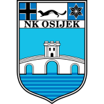
奥西耶克仅赛程01:00土超伊斯坦布尔 VS
VS 乔鲁姆仅赛程
乔鲁姆仅赛程
01:00塞浦路斯甲级联赛伊普索纳斯VS 阿诺索西斯仅赛程
阿诺索西斯仅赛程
02:00丹麦超布隆德比 VS中日德兰仅赛程
VS中日德兰仅赛程
02:00波兰超克拉科夫维切斯塔 VS
VS 卢布林莫托仅赛程
卢布林莫托仅赛程
02:00瑞典超厄尔格里特 VS
VS 卡尔马仅赛程
卡尔马仅赛程
02:00瑞典超哈马比 VS
VS 哥德堡仅赛程
哥德堡仅赛程
02:00罗甲塞普西VS 布加勒斯特快速仅赛程
布加勒斯特快速仅赛程
02:15亚冠吉达联合 VS棉农仅赛程
VS棉农仅赛程
02:15亚冠巴格达空军VS加拉法仅赛程
02:15亚冠精英QuwaVS赖扬加拉仅赛程
03:00玻利维亚甲级联赛皇家奥鲁罗 VS瓜比拉仅赛程
VS瓜比拉仅赛程
03:00英超联赛杯伯恩茅斯U21 VS
VS 莱斯特城U21仅赛程
莱斯特城U21仅赛程
03:00英超联赛杯伯明翰U21 VS吉林汉姆U21仅赛程
VS吉林汉姆U21仅赛程
03:00英超联赛杯布莱顿 U21VS西汉姆联 U21仅赛程
03:00英超联赛杯狼队 U21VS普雷斯顿U21仅赛程
03:00英超联赛杯纽卡斯尔联 U21 VS
VS 诺丁汉森林 U21仅赛程
诺丁汉森林 U21仅赛程
03:00英超联赛杯雷丁U21 VS埃克塞特U21仅赛程
VS埃克塞特U21仅赛程
03:00荷乙PSV埃因霍温青年VS 乌德勒支青年队仅赛程
乌德勒支青年队仅赛程
03:00荷乙维特斯VS 格拉夫已延期
格拉夫已延期
03:00荷乙阿贾克斯青年队 VS
VS 阿尔克马尔青年队仅赛程
阿尔克马尔青年队仅赛程
03:30乌拉圭甲级联赛尤文图德 VS防卫者体育仅赛程
VS防卫者体育仅赛程
03:30西乙休达VS阿尔梅里亚仅赛程
03:45意甲蒙扎VS 佛罗伦萨仅赛程
佛罗伦萨仅赛程
03:45法乙南特VS 格勒诺布仅赛程
格勒诺布仅赛程
03:45法乙索肖 VS
VS 敦刻尔克仅赛程
敦刻尔克仅赛程
04:00英超布伦特 VS埃弗顿仅赛程
VS埃弗顿仅赛程
04:00西甲莱万特VS埃尔切仅赛程
04:00阿甲吉姆纳西亚VS 纽维尔老男孩仅赛程
纽维尔老男孩仅赛程
05:00巴拉圭甲级联赛五月二日VS巴拉圭圣洛伦索仅赛程
05:15玻利维亚甲级联赛温托大学VS 瓜尔贝托仅赛程
瓜尔贝托仅赛程
06:30乌拉圭甲级联赛蒙得维的亚阿尔比恩VS达努比奥仅赛程
06:30巴甲巴西国际 VS
VS 维多利亚仅赛程
维多利亚仅赛程
07:00巴甲博塔弗戈 VS圣保罗仅赛程
VS圣保罗仅赛程
07:15巴拉圭甲级联赛亚松森国民VS波特诺仅赛程
08:00巴甲桑托斯VS 格雷米奥仅赛程
格雷米奥仅赛程
11/23 · 0 场85 场未开赛
09:00阿甲科尔多瓦学院VS飓风仅赛程
09:10墨超克雷塔罗VS内卡萨仅赛程
09:30美职联温哥华 VS
VS 盐湖城仅赛程
盐湖城仅赛程
19:00乌克兰超级联赛LNZ切尔卡瑟 VS波利西亚仅赛程
VS波利西亚仅赛程
19:00乌克兰超级联赛敖德萨黑海人VS 埃皮森特尔仅赛程
埃皮森特尔仅赛程
20:30U17世界杯塔吉克斯坦U17VS克罗地亚U17仅赛程
20:30U17世界杯西班牙U17VS斐济U17仅赛程
20:40阿曼职业联赛萨哈姆 VS阿曼FC仅赛程
VS阿曼FC仅赛程
20:45希腊超级联赛2皮尔戈斯1968
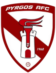
VS马尔科仅赛程21:00U17世界杯乌兹别克斯坦U17VS牙买加U17仅赛程
21:00希腊超级联赛2PAOK塞萨洛尼基B队 VS
VS 沃洛斯尼基仅赛程
沃洛斯尼基仅赛程
21:30U17世界杯塞内加尔U17VS古巴U17仅赛程
21:45亚冠费尔干纳纳夫兹VS利雅得新月仅赛程
22:30U17世界杯意大利U17VS科特迪瓦U17仅赛程
22:30沙特甲级联赛阿尔吉尔VS阿尔萨克尔仅赛程
23:00U17世界杯摩洛哥U17VS中国U17仅赛程
23:00希腊超特里波利斯之星 VS阿里斯仅赛程
VS阿里斯仅赛程
23:00阿曼职业联赛巴赫拉VS 萨迈伊尔仅赛程
萨迈伊尔仅赛程
23:15沙特甲级联赛吉达FCVS 达马克仅赛程
达马克仅赛程
23:30U17世界杯越南U17VS新西兰U17仅赛程
23:30U17世界杯马里U17VS比利时U17仅赛程
00:00亚美尼亚超级联赛阿拉什凯特 VS诺亚FC仅赛程
VS诺亚FC仅赛程
00:00保加利亚甲级联赛普罗夫迪夫博特夫 VS索陆军仅赛程
VS索陆军仅赛程
00:00土超特拉布宗VS埃于普体育仅赛程
00:00塞尔维亚超级联赛马奇瓦 VS
VS 伏伊伏丁仅赛程
伏伊伏丁仅赛程
00:00奥超奥地利维也纳VSFC萨尔茨堡仅赛程
00:00挪超KFUM奥斯陆 VS布兰仅赛程
VS布兰仅赛程
00:00挪超克里斯蒂VS 桑纳菲仅赛程
桑纳菲仅赛程
00:00挪超奥勒松 VS
VS 罗森博格仅赛程
罗森博格仅赛程
00:15意乙阿雷佐VS帕多瓦仅赛程
00:15法甲洛里昂VS雷恩仅赛程
00:30厄瓜多尔甲级联赛曼塔 VS
VS 德尔芬仅赛程
德尔芬仅赛程
00:30德甲不来梅 VS
VS 汉堡仅赛程
汉堡仅赛程
00:30斯洛文尼亚甲级…采列VS 布里尼耶格罗苏普利耶仅赛程
布里尼耶格罗苏普利耶仅赛程
00:30波兰超普沃茨克维斯瓦 VS华沙军团仅赛程
VS华沙军团仅赛程
00:30波黑超级联赛萨拉热窝 VS希罗基布里耶格仅赛程
VS希罗基布里耶格仅赛程
00:30英超利物浦VS曼联仅赛程
01:00丹麦超北西兰VS哥本哈根仅赛程
01:00克罗地亚甲级联赛里耶卡 戈里察仅赛程
戈里察仅赛程
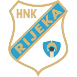
VS01:00塞浦路斯甲级联赛利马索尔阿波罗VS奥莫尼亚5月29日仅赛程
01:00希腊超奥林匹亚VS 伊拉克利斯仅赛程
伊拉克利斯仅赛程
01:00意甲AC米兰VS弗洛西诺仅赛程
01:00捷甲布斯巴达VS 利贝雷茨仅赛程
利贝雷茨仅赛程
01:00斯洛伐克超级联赛多瑙斯特雷达 VS
VS 科马尔诺仅赛程
科马尔诺仅赛程
01:30匈牙利甲级联赛布达佩斯捍卫者VS保克什仅赛程
01:30希腊超PAOK塞萨洛尼基VS基菲西亚仅赛程
01:30比甲安德莱VS奥哈瓦里仅赛程
01:30西乙维戈塞尔塔B队 VS
VS 巴利亚多利德仅赛程
巴利亚多利德仅赛程
01:30西乙赫罗纳 VS
VS 埃瓦尔仅赛程
埃瓦尔仅赛程
01:30西甲奥萨苏纳VS马拉加仅赛程
02:00葡萄牙杯阿马多拉VS波尔蒂芒斯仅赛程
02:15挪超萨普斯堡VS利勒斯特仅赛程
02:15比乙根特B队 VS
VS 布瑞恩斯仅赛程
布瑞恩斯仅赛程
02:15比甲洛默尔 VS
VS 标准列日仅赛程
标准列日仅赛程
02:30直布罗陀超级联赛直布罗陀猎犬VS 直布罗陀山猫仅赛程
直布罗陀山猫仅赛程
02:30罗甲阿尔杰什 VS布加勒斯特星仅赛程
VS布加勒斯特星仅赛程
03:00厄瓜多尔甲级联赛奥伦塞 VS穆苏克鲁纳仅赛程
VS穆苏克鲁纳仅赛程
03:00巴乙克里西乌马 VS
VS 福塔莱萨仅赛程
福塔莱萨仅赛程
03:00巴甲巴竞技VS雷莫仅赛程
03:00玻利维亚甲级联赛皇家波托西VS 玻利瓦尔仅赛程
玻利瓦尔仅赛程
03:00阿甲罗萨里奥VS
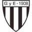
门多萨体操仅赛程03:30葡萄牙杯莱里亚VS莱萨仅赛程
03:45意甲亚特兰大VS国际米兰仅赛程
03:45法甲马赛VS勒芒仅赛程
04:00秘鲁甲级联赛万卡约VS体育大学仅赛程
04:00秘鲁甲级联赛水晶体育 VS
VS 西恩夏诺仅赛程
西恩夏诺仅赛程
04:00西乙布尔戈斯 VS
VS 阿尔巴塞特仅赛程
阿尔巴塞特仅赛程
04:00西甲赫塔费VS马竞仅赛程
04:45葡萄牙杯托林斯VS本菲卡仅赛程
05:00委内瑞拉甲级联赛都市人VS拉瓜伊拉仅赛程
05:00巴拉圭甲级联赛亚松森奥林匹亚VS特立尼登斯仅赛程
05:00巴拉圭甲级联赛鲁比奥尼尤VS亚松森自由仅赛程
05:00智利甲科洛科洛VS天主教大学仅赛程
05:00美职联纳什维尔 VS辛辛那提仅赛程
VS辛辛那提仅赛程
05:15玻利维亚甲级联赛最强者VS 布鲁明仅赛程
布鲁明仅赛程
05:30厄瓜多尔甲级联赛基多体大VS 奥卡斯仅赛程
奥卡斯仅赛程
05:30委内瑞拉甲级联赛卡拉沃沃VS
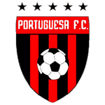
委内瑞拉葡萄牙人仅赛程05:30巴乙戈亚尼亚竞技 VS
VS 维拉诺瓦仅赛程
维拉诺瓦仅赛程
05:30巴甲弗鲁米嫩 VS
VS 米拉索尔仅赛程
米拉索尔仅赛程
06:00阿甲河床VS拉努斯仅赛程
06:30巴甲布拉干蒂诺RB VS达伽马仅赛程
VS达伽马仅赛程
07:07墨超瓜达拉哈拉VS蓝十字仅赛程
07:30智利甲利马切 VS
VS 拉塞雷纳仅赛程
拉塞雷纳仅赛程
07:30玻利维亚甲级联赛圣安东尼奥布洛VS时刻准备仅赛程
07:30美职联芝加哥VS 夏洛特FC仅赛程
夏洛特FC仅赛程
11/22 · 16 场212 场未开赛
09:00墨超普马斯VS蒙特雷仅赛程
09:15哥伦比亚甲级联赛卡尔达斯VS麦德林国民竞技仅赛程
10:00澳超惠灵顿VS麦克阿瑟仅赛程
11:00墨超老虎大学VS 墨西哥美洲仅赛程
墨西哥美洲仅赛程
13:00周日001韩K联金泉尚武VS济州SK待分析
13:00周日002韩职光州FCVS 富川FC待分析
富川FC待分析
13:00日职乙德岛漩涡VS湘南比马仅赛程
13:00韩K2全南天龙VS安山绿人仅赛程
13:00韩K2大邱FC VS金海FC仅赛程
VS金海FC仅赛程
13:00韩K联光州FCVS富川1995仅赛程
15:00香港超级联赛沙田VS 东方仅赛程
东方仅赛程
15:30韩K2坡州前沿 VS
VS 天安城仅赛程
天安城仅赛程
15:30韩K2首尔衣恋 VS忠南牙山仅赛程
VS忠南牙山仅赛程
16:30印尼甲级联赛中加里曼丹伊森穆朗VS婆罗洲仅赛程
17:30马来西亚超级联赛吉隆坡城 VS槟城仅赛程
VS槟城仅赛程
18:30土超埃尔祖鲁姆体育VS格兹特佩仅赛程
18:30希腊超级联赛2卡尔迪萨复兴
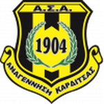
VS卡利费亚仅赛程18:30阿塞拜疆超级联赛阿拉斯VS巴库石油工人仅赛程
19:00乌克兰超级联赛基辅迪纳摩VS 奥博隆仅赛程
奥博隆仅赛程
19:00乌克兰超级联赛维勒斯
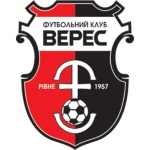
VS布科维纳仅赛程19:00乌兹别克斯坦超…撒马尔罕迪纳摩VS
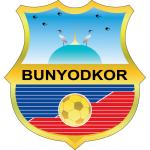
本尤德科仅赛程19:00保加利亚甲级联赛弗拉察博特夫VS 中央陆军1948仅赛程
中央陆军1948仅赛程
19:00摩尔多瓦超级联赛锡雷茨 佩特罗库布仅赛程
佩特罗库布仅赛程
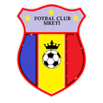
VS19:00柬埔寨联赛柬埔寨国防部 VS
VS 磅德瓦仅赛程
磅德瓦仅赛程
19:00柬埔寨联赛柴桢VS 吴哥老虎仅赛程
吴哥老虎仅赛程
19:00泰国超级联赛曼谷联VS 大城仅赛程
大城仅赛程
19:00葡萄牙杯圣若昂内塞VS 科英布拉大学仅赛程
科英布拉大学仅赛程
19:00越南超级联赛岘港VS富董仅赛程
19:00越南超级联赛河静洪领 VS
VS 胡志明市仅赛程
胡志明市仅赛程
19:15周日003荷甲特温特VS 威廉二世待分析
威廉二世待分析
19:15波兰超琴斯托霍瓦 VS罗兹维德祖仅赛程
VS罗兹维德祖仅赛程
19:30周日004意甲尤文图斯VS 威尼斯待分析
威尼斯待分析
19:30新加坡超级联赛后港联VS淡宾尼士仅赛程
19:30新加坡超级联赛狮城水手VS芽笼国际仅赛程
19:30泰国超级联赛清莱联 VS南奔战士仅赛程
VS南奔战士仅赛程
20:00印尼甲级联赛万隆VS巴厘联仅赛程
20:00塞尔维亚超级联赛拉德尼基1923 VS
VS 古拉瑞奇仅赛程
古拉瑞奇仅赛程
20:00希腊超级联赛2扎金索斯VS潘塞莱科斯仅赛程
20:00捷甲帕尔杜比采 VS布尔诺仅赛程
VS布尔诺仅赛程
20:00泰国超级联赛罗勇 VS
VS 拉西萨莱联仅赛程
拉西萨莱联仅赛程
20:00英冠伯恩利VS布莱克本仅赛程
20:30U17世界杯丹麦U17VS澳大利亚U17仅赛程
20:30U17世界杯希腊U17VS巴拿马U17仅赛程
20:30匈牙利甲级联赛佐洛埃格塞格VS瓦沙斯仅赛程
20:30德乙凯泽 VS
VS 德累斯顿仅赛程
德累斯顿仅赛程
20:30德乙卡斯鲁厄VS 奥斯纳仅赛程
奥斯纳仅赛程
20:30德乙科特布斯 VS柏林赫塔仅赛程
VS柏林赫塔仅赛程
20:30比甲贝弗伦VS根特仅赛程
20:30挪超附加赛奥德VS布莱尼仅赛程
20:35阿曼职业联赛苏尔VS 苏哈尔仅赛程
苏哈尔仅赛程
21:00周日006西甲巴萨VS比利亚雷待分析
21:00U17世界杯厄瓜多尔U17VS乌干达U17仅赛程
21:00丹麦超维堡 VS
VS 兰德斯仅赛程
兰德斯仅赛程
21:00丹麦超霍森斯 VS锡尔克堡仅赛程
VS锡尔克堡仅赛程
21:00亚美尼亚超级联赛埃里温凤凰 萨尔达拉帕特仅赛程
萨尔达拉帕特仅赛程
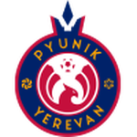
VS21:00土超卡斯帕萨VS阿兰亚体育仅赛程
21:00土超科尼亚体育 VS贝西克塔仅赛程
VS贝西克塔仅赛程
21:00塞浦路斯甲级联赛尼科西亚奥林匹亚科斯VS AEK拉纳卡仅赛程
AEK拉纳卡仅赛程
21:00希腊超级联赛2奥林匹亚B队VS 庞托斯阿波罗仅赛程
庞托斯阿波罗仅赛程
21:00摩尔多瓦超级联赛伯尔齐 VS
VS 达西亚布尤卡尼仅赛程
达西亚布尤卡尼仅赛程
21:00瑞典超天狼星 VS佐加顿斯仅赛程
VS佐加顿斯仅赛程
21:00瑞典超赫根 VS
VS 埃夫斯堡仅赛程
埃夫斯堡仅赛程
21:00瑞士超苏黎世 VS
VS 圣加仑仅赛程
圣加仑仅赛程
21:00英超联赛杯布伦特U21VS赫尔城U21仅赛程
21:00英超联赛杯彼得堡联U21VS卢顿U21仅赛程
21:00西乙科尔多瓦VS 奥维耶多仅赛程
奥维耶多仅赛程
21:00西甲巴塞罗那VS比利亚雷仅赛程
21:00阿塞拜疆超级联赛卡帕兹VS卡拉巴赫仅赛程
21:30周日007荷甲鹿斯巴达 VS阿尔克马待分析
VS阿尔克马待分析
21:30U17世界杯法国U17VS沙特阿拉伯U17仅赛程
21:30保加利亚甲级联赛索列夫VS 索菲亚火车头仅赛程
索菲亚火车头仅赛程
21:30奥超沃尔夫斯贝格 VS
VS 里德仅赛程
里德仅赛程
21:30奥超阿尔特阿赫 VS格拉茨风暴仅赛程
VS格拉茨风暴仅赛程
21:30荷甲阿贾克斯VS 海牙仅赛程
海牙仅赛程
21:45波兰超卡托维兹VS波兹南仅赛程
22:00周日008意甲博洛尼亚 VS乌迪内斯待分析
VS乌迪内斯待分析
22:00周日009意甲萨索洛VS 热那亚待分析
热那亚待分析
22:00克罗地亚甲级联赛萨迪纳摩VS 伊斯特拉1961仅赛程
伊斯特拉1961仅赛程
22:00印度超级联赛丘吉尔兄弟VS莫亨巴根仅赛程
22:00塞尔维亚超级联赛IMT新贝尔格莱德 VS贝尔格莱德游击仅赛程
VS贝尔格莱德游击仅赛程
22:00希腊超莱瓦贾科斯VS 阿特罗米托斯仅赛程
阿特罗米托斯仅赛程
22:00意乙阿韦利诺VS曼托瓦仅赛程
22:00捷甲斯洛瓦茨科VS赫拉德茨克拉洛韦仅赛程
22:00斯洛文尼亚甲级…马里博尔 VS伦达瓦纳夫塔仅赛程
VS伦达瓦纳夫塔仅赛程
22:00法甲巴黎FCVS昂热仅赛程
22:00波黑超级联赛泽尼察钢铁VS多博伊斯洛加仅赛程
22:00英超赫尔城 VS布莱顿仅赛程
VS布莱顿仅赛程
22:00英超联赛杯斯托克城U21VS斯托克港U21仅赛程
22:00葡甲维泽拉VS CD费伦斯已延期
CD费伦斯已延期
22:00葡萄牙杯吉尔维森特VS奥良人仅赛程
22:00葡萄牙杯塞尔纳谢胜利VS 洛罗萨卢西塔尼亚仅赛程
洛罗萨卢西塔尼亚仅赛程
22:00葡萄牙杯维亚嫩塞VS 里奥阿维仅赛程
里奥阿维仅赛程
22:30周日010德甲奥格斯堡 VS
VS 美因茨待分析
美因茨待分析
22:30U17世界杯韩国U17VS新喀里多尼亚U17仅赛程
22:30斯洛伐克超级联赛科希策 VS斯卡利察仅赛程
VS斯卡利察仅赛程
23:00U17世界杯卡塔尔U17VS埃及U17仅赛程
23:00丹麦超桑德捷斯基 VS欧登塞仅赛程
VS欧登塞仅赛程
23:00匈牙利甲级联赛尼赖吉哈佐 VS
VS 德布勒森仅赛程
德布勒森仅赛程
23:00卢森堡国家联赛凯尔任97 VS
VS 蒙多夫莱班仅赛程
蒙多夫莱班仅赛程
23:00卢森堡国家联赛卢森堡联合VS维尔茨仅赛程
23:00卢森堡国家联赛埃斯佩朗日 VS
VS 比森阿泰尔仅赛程
比森阿泰尔仅赛程
23:00卢森堡国家联赛埃策拉VS 斯特拉森仅赛程
斯特拉森仅赛程
23:00卢森堡国家联赛罗斯波特维多利亚VS 埃施青年仅赛程
埃施青年仅赛程
23:00卢森堡国家联赛迪弗当日 VS
VS 尼德康仅赛程
尼德康仅赛程
23:00卢森堡国家联赛迪德朗日
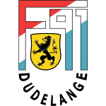
VS瓦尔费当日仅赛程23:00卢森堡国家联赛霍斯特尔特VS 吕默朗日仅赛程
吕默朗日仅赛程
23:00塞浦路斯甲级联赛卡米奥蒂萨 VS
VS AEL利马索尔仅赛程
AEL利马索尔仅赛程
23:00希腊超帕纳多里科斯 VS沃洛斯仅赛程
VS沃洛斯仅赛程
23:00智利乙级联赛阿里卡圣马科斯VS 麦哲伦仅赛程
麦哲伦仅赛程
23:00智利甲瓦奇巴托VS康塞普西翁仅赛程
23:00比乙比尔肖特VS亨克B队仅赛程
23:00比甲科特赖克 VS圣吉罗斯仅赛程
VS圣吉罗斯仅赛程
23:00葡萄牙杯SC法伦斯 VS法蒂玛仅赛程
VS法蒂玛仅赛程
23:00阿曼职业联赛穆萨纳VS佐法尔仅赛程
23:15周日011西甲桑坦德VS皇家社会待分析
23:15西乙希洪体育 VS
VS 拉斯帕尔马斯仅赛程
拉斯帕尔马斯仅赛程
23:30U17世界杯乌拉圭U17VS海地U17仅赛程
23:30U17世界杯阿根廷U17VS莫桑比克U17仅赛程
23:30希腊超帕纳辛纳VSOFI克里特仅赛程
23:30瑞典超布罗姆马 VS
VS 哈尔姆斯仅赛程
哈尔姆斯仅赛程
23:30瑞士超巴塞尔VS卢塞恩仅赛程
23:30瑞士超洛桑VS瓦杜兹仅赛程
23:30直布罗陀超级联赛喜鹊VS林肯红魔仅赛程
23:30罗甲UTA阿拉德 VSCS克拉约瓦大学仅赛程
VSCS克拉约瓦大学仅赛程
23:45荷甲前进之鹰VS福图纳仅赛程
00:00乌克兰超级联赛喀尔巴阡VS卢甘斯克索尔亚仅赛程
00:00土超科贾埃利体育 VS费内巴切仅赛程
VS费内巴切仅赛程
00:00塞尔维亚超级联赛OFK贝尔格莱德 VS诺维帕扎尔仅赛程
VS诺维帕扎尔仅赛程
00:00奥超LASK林茨VS 哈特堡格仅赛程
哈特堡格仅赛程
00:00奥超瓦滕斯 VS奥地利卢斯特瑙仅赛程
VS奥地利卢斯特瑙仅赛程
00:00安道尔甲级联赛安道尔游骑兵VS埃斯卡尔德斯体育仅赛程
00:00葡萄牙杯埃斯托里 VS
VS 费尔盖拉斯仅赛程
费尔盖拉斯仅赛程
00:15意乙卡坦扎罗VS巴勒莫仅赛程
00:15法甲尼斯VS巴黎圣日耳曼仅赛程
00:30周日012英超利物浦VS曼联待分析
00:30周日013德甲不来梅VS汉堡待分析
00:30伊拉克联赛诺鲁孜 VS安巴尔卡尔马仅赛程
VS安巴尔卡尔马仅赛程
00:30斯洛文尼亚甲级…穆拉 VS布拉沃仅赛程
VS布拉沃仅赛程
00:30波兰超卢宾扎格勒比 VS
VS 扎布热矿工仅赛程
扎布热矿工仅赛程
00:30瑞典超盖斯VS 瓦斯特拉斯仅赛程
瓦斯特拉斯仅赛程
01:00周日014意甲AC米兰VS弗洛西诺待分析
01:00克罗地亚甲级联赛鲁德什VS瓦拉日丁仅赛程
01:00塞浦路斯甲级联赛阿里斯 VS新萨拉米斯仅赛程
VS新萨拉米斯仅赛程
01:00意甲帕尔马VS罗马仅赛程
01:00挪超瓦勒伦加 VS
VS 斯达仅赛程
斯达仅赛程
01:00捷甲波希米亚人1905 VS比尔森仅赛程
VS比尔森仅赛程
01:00斯洛伐克超级联赛米哈洛夫采 VS
VS 特尔纳瓦斯巴达仅赛程
特尔纳瓦斯巴达仅赛程
01:00瑞士超伯尔尼年轻人VS图恩仅赛程
01:00瑞士超卢加诺VS 草蜢仅赛程
草蜢仅赛程
01:00葡萄牙杯马里迪莫 VS沙维什仅赛程
VS沙维什仅赛程
01:00黑山甲级联赛彼得罗瓦茨VS德西奇仅赛程
01:15比甲亨克VS 拉卢维耶尔仅赛程
拉卢维耶尔仅赛程
01:30匈牙利甲级联赛费伦茨VS
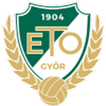
杰尔仅赛程01:30希腊超卡拉马塔 VSAEK雅典仅赛程
VSAEK雅典仅赛程
01:30德甲沙尔克VS斯图加特仅赛程
01:30英超纽卡斯尔 VS阿森纳仅赛程
VS阿森纳仅赛程
01:30西乙卡斯特利翁VS 埃尔登斯仅赛程
埃尔登斯仅赛程
01:30西甲塞维利亚 VS皇家贝蒂斯仅赛程
VS皇家贝蒂斯仅赛程
01:45苏超邓迪VS哈茨仅赛程
01:45荷甲乌得勒支 VS
VS 坎布尔仅赛程
坎布尔仅赛程
01:45荷甲费耶诺德VSSBV精英仅赛程
02:00葡萄牙杯葡萄牙体育VS
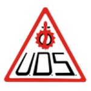
莱里亚塞拉仅赛程02:00阿甲国防与司法VS巴拉卡斯中央仅赛程
02:30奥超格拉茨AKVS维也纳快速仅赛程
02:30意乙恩波利VS比萨仅赛程
02:30直布罗陀超级联赛学院1975 VS欧罗巴（直布罗陀）仅赛程
VS欧罗巴（直布罗陀）仅赛程
02:30罗甲布加勒斯特迪纳摩VS 佩特罗鲁仅赛程
佩特罗鲁仅赛程
03:00厄瓜多尔甲级联赛安巴托技术大学VS 昆卡仅赛程
昆卡仅赛程
03:00安道尔甲级联赛奥尔迪诺 VS
VS 恩卡纳达仅赛程
恩卡纳达仅赛程
03:00比乙瑟兰VS帕特罗艾斯登仅赛程
03:00法乙兰斯 VS
VS 圣埃蒂安仅赛程
圣埃蒂安仅赛程
03:00玻利维亚甲级联赛皇家托马亚波 VS
VS 波托西民族仅赛程
波托西民族仅赛程
03:00美职联新英格兰VS 费城仅赛程
费城仅赛程
03:15波兰超拉多米亚克VS 克拉科夫维斯瓦仅赛程
克拉科夫维斯瓦仅赛程
03:30安道尔甲级联赛安道尔希望 VS卡罗伊仅赛程
VS卡罗伊仅赛程
03:30巴甲帕梅拉斯VS弗拉门戈仅赛程
03:30德乙圣保利VS波鸿仅赛程
03:30瑞士超锡永 VS塞尔维特仅赛程
VS塞尔维特仅赛程
03:45周日016意甲亚特兰大VS国际米兰待分析
03:45周日017法甲马赛VS勒芒待分析
03:45意甲那不勒斯VS 都灵仅赛程
都灵仅赛程
03:45比甲威尔郡VS安特卫普仅赛程
03:45比甲梅赫伦VS布鲁日仅赛程
03:45法甲摩纳哥VS 欧塞尔仅赛程
欧塞尔仅赛程
03:45法甲斯特拉斯 VS
VS 布雷斯特仅赛程
布雷斯特仅赛程
03:45法甲朗斯VS 图卢兹仅赛程
图卢兹仅赛程
03:45法甲里尔VS里昂仅赛程
04:00周日018西甲赫塔费VS马竞待分析
04:00苏超马瑟韦尔VS格拉斯哥流浪者仅赛程
04:00荷甲格罗宁根 VS海伦芬仅赛程
VS海伦芬仅赛程
04:00荷甲特尔斯达VS兹沃勒仅赛程
04:00西乙特内里费 VS
VS 马洛卡仅赛程
马洛卡仅赛程
04:00西甲皇家马德里VS塞尔塔仅赛程
04:00阿甲阿根廷青年人VS独立仅赛程
04:30巴甲巴伊亚 VS科里蒂巴仅赛程
VS科里蒂巴仅赛程
04:30秘鲁甲级联赛利马联盟VS卡哈马卡FC仅赛程
04:30葡萄牙杯吉马良斯 VS布拉加仅赛程
VS布拉加仅赛程
05:00智利甲奥伊金斯 VS
VS 智利大学仅赛程
智利大学仅赛程
05:00美职联FC达拉斯VS 波特兰仅赛程
波特兰仅赛程
05:15玻利维亚甲级联赛玻利维亚ABB VS
VS 奥罗拉仅赛程
奥罗拉仅赛程
05:30厄瓜多尔甲级联赛天主教大学 VS瓜亚基尔仅赛程
VS瓜亚基尔仅赛程
05:30委内瑞拉甲级联赛塔奇拉VS加拉加斯仅赛程
05:30智利乙级联赛科布雷洛阿 VS基约塔圣路易斯仅赛程
VS基约塔圣路易斯仅赛程
06:30南俱杯米竞技VS博卡青年仅赛程
06:50墨超帕丘卡 VS
VS 托卢卡仅赛程
托卢卡仅赛程
07:00墨超桑托斯拉古纳VS 莱昂仅赛程
莱昂仅赛程
07:00美职联迈阿密国际VS哥伦布仅赛程
07:30委内瑞拉甲级联赛卡贝略港VS莫纳加斯仅赛程
07:30智利甲康塞普西翁大学 VS
VS 纽布伦斯仅赛程
纽布伦斯仅赛程
07:30玻利维亚甲级联赛东方石油VS 独立石油仅赛程
独立石油仅赛程
08:00巴甲沙佩科VS 克鲁塞罗仅赛程
克鲁塞罗仅赛程
08:00智利乙级联赛科皮亚波VS安托法加斯塔仅赛程
11/21 · 21 场282 场今日
09:00墨超普埃布拉 VS
VS 圣路易斯竞技仅赛程
圣路易斯竞技仅赛程
09:40哥伦比亚甲级联赛卡利体育VS百万富翁仅赛程
11:00墨超华雷斯VS阿特拉斯仅赛程
11:10墨超蒂华纳VS亚特兰特仅赛程
12:00澳超奥克兰FC VS墨胜利仅赛程
VS墨胜利仅赛程
13:00周六001日职联广岛三箭VS横滨水手待分析
13:00周六002日职乙磐田喜悦VS大宫松鼠RB待分析
13:00日职乙宫崎惊奇牛鸟VS磐城仅赛程
13:00日职乙富山胜利VS大分三神仅赛程
13:00日职乙枥木城VS新泻天鹅仅赛程
13:00日职乙横滨FCVS北海道札幌冈萨多仅赛程
13:00日职乙甲府风林VS万劳雷八户仅赛程
13:00日职乙秋田蓝色闪电VS山形山神仅赛程
13:00日职乙藤枝MYFCVSFC今治仅赛程
13:00日职乙鸟栖沙岩VS仙台七夕仅赛程
13:00日职联东京绿茵VS名古屋鲸仅赛程
13:00日职联京都VS浦和红钻仅赛程
13:00日职联町田泽维VS长崎航海仅赛程
13:00韩K2水原三星 VS庆南FC仅赛程
VS庆南FC仅赛程
13:00韩K2釜山IParkVS 忠北清州FC仅赛程
忠北清州FC仅赛程
13:00韩K联全北现代VSFC首尔仅赛程
13:00韩K联浦项制铁VS FC安养仅赛程
FC安养仅赛程
13:00日乙甲府风林VSVanraure仅赛程
14:00日职联大阪樱花VSFC东京仅赛程
14:00日职联川崎前锋VS福冈黄蜂仅赛程
14:00澳超中央海岸VS珀斯仅赛程
15:00周六003日职联大阪钢巴VS冈山绿雉待分析
15:00香港超级联赛冠忠南区 VS标准流浪仅赛程
VS标准流浪仅赛程
15:00香港超级联赛大埔VS杰志仅赛程
15:30韩K2城南FC VS
VS 龙仁FC仅赛程
龙仁FC仅赛程
15:30韩K2金浦FC VS
VS 水原FC仅赛程
水原FC仅赛程
15:30韩K联仁川联VS蔚山现代仅赛程
15:30韩K联江原FCVS大田市民仅赛程
16:30印尼甲级联赛佩斯克谏义里 VS
VS 日惹仅赛程
日惹仅赛程
16:30印尼甲级联赛泗水 VS
VS 北马鲁古联仅赛程
北马鲁古联仅赛程
16:40周六004澳超布里斯班 VS悉尼FC待分析
VS悉尼FC待分析
18:00安道尔甲级联赛埃斯卡尔德斯竞技VS 圣科洛马仅赛程
圣科洛马仅赛程
18:30土超青年联合 VS加济安泰普仅赛程
VS加济安泰普仅赛程
18:30阿塞拜疆超级联赛凯什拉VS托武兹图兰仅赛程
19:00乌克兰超级联赛克里夫巴斯VS库德里夫卡仅赛程
19:00乌克兰超级联赛科瓦利夫卡科洛斯VS哈尔科夫仅赛程
19:00亚美尼亚超级联赛休尼克VS乌拉尔图仅赛程
19:00摩尔多瓦超级联赛摩尔多瓦理工VS 辛布鲁仅赛程
辛布鲁仅赛程
19:00柬埔寨联赛万吉吴哥 VS西哈努克生命仅赛程
VS西哈努克生命仅赛程
19:00柬埔寨联赛金界 VS丹科森切仅赛程
VS丹科森切仅赛程
19:00柬埔寨联赛金边皇冠VS基里翁索森切仅赛程
19:00泰国超级联赛北大年 VS
VS 素可泰仅赛程
素可泰仅赛程
19:00葡萄牙杯葡萄牙竞技VS卡萨皮亚仅赛程
19:00越南超级联赛南定VS 海防仅赛程
海防仅赛程
19:00越南超级联赛平福VS 河内仅赛程
河内仅赛程
19:30印度超级联赛清奈VS 旁遮普仅赛程
旁遮普仅赛程
19:30新加坡超级联赛幼狮VS丹戎巴葛联仅赛程
19:30泰国超级联赛春武里 VS乌泰他尼仅赛程
VS乌泰他尼仅赛程
20:00乌兹别克斯坦超…浩罕1912VS 索格迪亚纳仅赛程
索格迪亚纳仅赛程
20:00乌兹别克斯坦超…纳萨夫VS马沙尔仅赛程
20:00印尼甲级联赛望加锡 VS
VS 佩斯查雅加达仅赛程
佩斯查雅加达仅赛程
20:00印尼甲级联赛隐形部队 VS
VS 佩斯查普仅赛程
佩斯查普仅赛程
20:00塞尔维亚超级联赛尼什拉德尼奇VS 泽蒙仅赛程
泽蒙仅赛程
20:00德乙汉诺威VS 菲尔特仅赛程
菲尔特仅赛程
20:00德乙沃夫斯堡VS 基尔仅赛程
基尔仅赛程
20:00德乙纽伦堡 VS
VS 不伦瑞克仅赛程
不伦瑞克仅赛程
20:00波黑超级联赛巴尼亚卢卡BSK 兹林尼仅赛程
兹林尼仅赛程
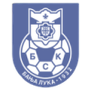
VS20:00瑞典超厄斯特松德 VS瓦尔贝里仅赛程
VS瓦尔贝里仅赛程
20:00立陶宛甲级联赛希奥利艾
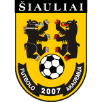
VS米尼亚仅赛程20:00黑山甲级联赛奥特兰特奥林匹克
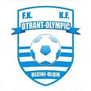
VS博凯利仅赛程20:00黑山甲级联赛姆拉多斯特DGVS蒂瓦特阿森纳仅赛程
20:15马来西亚超级联赛马六甲VS马来西亚移民局仅赛程
20:30周六005英超曼城VS富勒姆待分析
20:30U17世界杯塞尔维亚U17VS洪都拉斯U17仅赛程
20:30U17世界杯日本U17VS哥伦比亚U17仅赛程
20:30丹甲瓦埃勒 VSHB克厄仅赛程
VSHB克厄仅赛程
20:30匈牙利甲级联赛普斯卡什学院 VSMTK布达佩斯仅赛程
VSMTK布达佩斯仅赛程
20:30斯洛文尼亚杯斯沃博达 VS
VS 申丘尔仅赛程
申丘尔仅赛程
20:30泰国超级联赛叻丕府VS巴蜀基利仅赛程
20:30英乙吉林汉姆VS 克鲁仅赛程
克鲁仅赛程
20:30英乙纽波特郡VS 斯文登仅赛程
斯文登仅赛程
20:30英冠南安普敦VS德比郡仅赛程
20:30英冠米尔沃尔VS女王公园巡游者仅赛程
20:30英冠诺维奇VS卡迪夫城仅赛程
20:30英甲布莱克浦VS 维冈仅赛程
维冈仅赛程
20:30英甲雷丁VS布罗姆利仅赛程
20:45伊朗波斯湾职业…马赞德兰纳萨基 VS阿拉克铝业仅赛程
VS阿拉克铝业仅赛程
20:45保加利亚甲级联赛索菲亚斯拉维亚VS 阿尔达仅赛程
阿尔达仅赛程
20:45希腊超级联赛2拉里萨VS 特里波利斯之星B队仅赛程
特里波利斯之星B队仅赛程
20:45阿联酋职业联赛巴尼亚斯VS阿尔纳斯尔仅赛程
20:45阿联酋职业联赛豪尔费坎VS阿尔贾兹拉仅赛程
21:00U17世界杯坦桑尼亚U17VS哥斯达黎加U17仅赛程
21:00丹甲文德斯尔 VS
VS 哈维德夫仅赛程
哈维德夫仅赛程
21:00乌兹别克斯坦超…花剌子模VS布哈拉仅赛程
21:00卡塔尔星联赛阿尔瓦克拉VS赛利扬仅赛程
21:00土超加拉塔萨VS 萨姆松体育仅赛程
萨姆松体育仅赛程
21:00土超阿梅德 VS
VS 里泽体育仅赛程
里泽体育仅赛程
21:00塞尔维亚超级联赛贝尔格莱德红星VS 苏杜利察仅赛程
苏杜利察仅赛程
21:00安道尔甲级联赛埃斯卡尔德斯VS葡萄牙之家仅赛程
21:00希腊超级联赛2克里苏波利斯内斯托斯VS锡罗斯希腊人仅赛程
21:00希腊超级联赛2潘斯拉基科斯VS 帕尼奥尼奥斯仅赛程
帕尼奥尼奥斯仅赛程
21:00挪超特罗姆瑟 VS维京仅赛程
VS维京仅赛程
21:00摩尔多瓦超级联赛谢里夫 VS米尔萨米仅赛程
VS米尔萨米仅赛程
21:00法乙拉瓦勒VS 蒙彼利埃仅赛程
蒙彼利埃仅赛程
21:00罗甲奇克塞雷达 VS胡内多阿拉乌鸦仅赛程
VS胡内多阿拉乌鸦仅赛程
21:00西乙萨瓦德尔VS 格拉纳达仅赛程
格拉纳达仅赛程
21:00西甲阿拉维斯 VS拉科仅赛程
VS拉科仅赛程
21:00阿塞拜疆超级联赛巴库萨法VS卡巴拉仅赛程
21:00马来西亚超级联赛吉兰丹红勇士VS 沙巴仅赛程
沙巴仅赛程
21:30U17世界杯喀麦隆U17VS委内瑞拉U17仅赛程
21:45波兰超克拉科维亚 VS乔治罗尼亚仅赛程
VS乔治罗尼亚仅赛程
22:00周六007意甲科莫VS 卡利亚里待分析
卡利亚里待分析
22:00丹甲埃斯比约VS AB格莱萨克瑟仅赛程
AB格莱萨克瑟仅赛程
22:00伊拉克联赛费卢杰戈兰VS巴格达石油仅赛程
22:00克罗地亚甲级联赛萨格勒布火车头 VS哈伊杜克仅赛程
VS哈伊杜克仅赛程
22:00印度超级联赛东北联VS果阿仅赛程
22:00塞尔维亚超级联赛鲁卡尼马拉多特 VS潘切沃铁路工仅赛程
VS潘切沃铁路工仅赛程
22:00塞浦路斯甲级联赛阿拉迪普奥莫尼亚 VS帕福斯仅赛程
VS帕福斯仅赛程
22:00意乙南蒂罗尔VS克雷莫内塞仅赛程
22:00意乙卡拉拉VS恩特拉仅赛程
22:00意乙摩德纳VS尤维斯塔比亚仅赛程
22:00意乙桑普多利亚VS贝内文托仅赛程
22:00意乙阿斯科利VS维琴察仅赛程
22:00意甲拉齐奥 VS莱切仅赛程
VS莱切仅赛程
22:00捷甲俄斯特拉发 VS
VS 特普利采仅赛程
特普利采仅赛程
22:00捷甲奥洛穆茨 VS斯拉维亚仅赛程
VS斯拉维亚仅赛程
22:00捷甲姆拉达博莱斯拉夫VS 兹林仅赛程
兹林仅赛程
22:00捷甲阿尔蒂斯布尔诺VS亚布洛内茨仅赛程
22:00斯洛文尼亚甲级…卢布尔雅那 VS
VS 拉多姆列仅赛程
拉多姆列仅赛程
22:00瑞典超米亚尔比VS马尔默仅赛程
22:00瑞典超索尔纳VS 代格福什仅赛程
代格福什仅赛程
22:00葡萄牙杯马夫拉VS 阿罗卡仅赛程
阿罗卡仅赛程
22:30周六008德甲门兴 VS多特蒙德待分析
VS多特蒙德待分析
22:30周六009德甲埃沃斯堡VS弗赖堡待分析
22:30周六010德甲法兰克福 VS霍芬海姆待分析
VS霍芬海姆待分析
22:30周六011德甲柏林联合 VS莱红牛待分析
VS莱红牛待分析
22:30U17世界杯多米尼加共和国U17VS黑山U17仅赛程
22:30U17世界杯美国U17VS黑山U17已取消
22:30伊朗波斯湾职业…胡齐斯坦钢铁VS塞帕汉仅赛程
22:30德甲勒沃库森VS 帕德博恩仅赛程
帕德博恩仅赛程
22:30斯洛伐克超级联赛日利纳VS班斯卡比斯特里察仅赛程
22:30斯洛伐克超级联赛特伦钦VS波德布雷佐瓦仅赛程
22:30斯洛伐克超级联赛鲁容贝罗克VS布拉迪斯仅赛程
23:00周六012英超伯恩茅斯VS 诺丁汉待分析
诺丁汉待分析
23:00周六013英超热刺 VS
VS 伊普斯待分析
伊普斯待分析
23:00周六014英超维拉VS桑德兰待分析
23:00周六015英超考文垂 VS水晶宫待分析
VS水晶宫待分析
23:00周六016英超切尔西VS 利兹联待分析
利兹联待分析
23:00U17世界杯巴西U17VS爱尔兰U17仅赛程
23:00亚美尼亚超级联赛埃里温阿拉拉特 VS埃里温BKMA仅赛程
VS埃里温BKMA仅赛程
23:00匈牙利甲级联赛乌伊佩斯特 VS基斯瓦尔达仅赛程
VS基斯瓦尔达仅赛程
23:00塞浦路斯甲级联赛奥莫尼亚VS 希腊人竞技仅赛程
希腊人竞技仅赛程
23:00挪超汉坎VS腓特烈仅赛程
23:00智利甲科金博联VS埃弗顿VM仅赛程
23:00比乙RFC列日VS 安德莱赫特B队仅赛程
安德莱赫特B队仅赛程
23:00比乙欧本VS哈瑟尔特仅赛程
23:00比甲夏勒罗瓦 VS圣图尔登仅赛程
VS圣图尔登仅赛程
23:00波黑超级联赛比耶利纳拉德尼克VS 维莱兹仅赛程
维莱兹仅赛程
23:00波黑超级联赛萨拉热窝铁路工人 VS巴尼亚卢卡仅赛程
VS巴尼亚卢卡仅赛程
23:00苏冠女王公园 VS
VS 利文斯顿仅赛程
利文斯顿仅赛程
23:00苏冠拉茨流浪者VS帕尔蒂克蓟花仅赛程
23:00苏冠邓弗姆林竞技VS 格里诺克摩顿仅赛程
格里诺克摩顿仅赛程
23:00苏冠阿布罗斯VS 斯滕豪斯缪尔仅赛程
斯滕豪斯缪尔仅赛程
23:00苏超凯尔特人VS 圣米伦仅赛程
圣米伦仅赛程
23:00苏超基尔马诺克 VS阿伯丁仅赛程
VS阿伯丁仅赛程
23:00苏超希伯尼安VS 邓迪联仅赛程
邓迪联仅赛程
23:00苏超福尔柯克 VS
VS 圣约翰斯通仅赛程
圣约翰斯通仅赛程
23:00英乙克劳利VS弗利特伍德仅赛程
23:00英乙切尔滕汉姆VS布里斯托尔流浪仅赛程
23:00英乙切斯特菲尔德 VS
VS 什鲁斯伯里仅赛程
什鲁斯伯里仅赛程
23:00英乙北安普敦VS 罗奇代尔仅赛程
罗奇代尔仅赛程
23:00英乙奥尔德姆 VS
VS 埃克塞特仅赛程
埃克塞特仅赛程
23:00英乙巴尼特VS维尔港仅赛程
23:00英乙格里姆VS 罗瑟汉姆仅赛程
罗瑟汉姆仅赛程
23:00英乙特兰米尔VS科尔切斯特仅赛程
23:00英乙约克城 VS沃尔索尔仅赛程
VS沃尔索尔仅赛程
23:00英乙阿克灵顿VS索尔福德城仅赛程
23:00英冠博尔顿VS朴次茅斯仅赛程
23:00英冠斯托克城VS伯明翰仅赛程
23:00英冠斯旺西VS西布朗仅赛程
23:00英冠林肯城VS雷克斯仅赛程
23:00英冠狼队VS查尔顿仅赛程
23:00英冠米堡VS布城仅赛程
23:00英冠西汉姆联VS普雷斯顿仅赛程
23:00英冠谢菲尔德联VS沃特福德仅赛程
23:00英甲伯顿 VS卢顿仅赛程
VS卢顿仅赛程
23:00英甲剑桥联 VS
VS 斯托克港仅赛程
斯托克港仅赛程
23:00英甲哈德斯VS莱切斯特仅赛程
23:00英甲布拉德福VS唐卡斯特仅赛程
23:00英甲普利茅斯VS 彼得伯勒仅赛程
彼得伯勒仅赛程
23:00英甲曼斯菲尔德 VS
VS 米尔顿仅赛程
米尔顿仅赛程
23:00英甲牛津联VS威科姆仅赛程
23:00英甲莱顿东方VS AFC温布尔登仅赛程
AFC温布尔登仅赛程
23:00英甲诺茨郡VS斯蒂夫尼奇仅赛程
23:00葡萄牙杯阿维斯 VS
VS 通德拉仅赛程
通德拉仅赛程
23:15保加利亚甲级联赛瓦尔纳斯巴达VS 瓦尔纳黑海仅赛程
瓦尔纳黑海仅赛程
23:15西乙皇家社会B队VS加的斯仅赛程
23:15西甲巴列卡诺 VS
VS
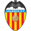
巴伦西亚仅赛程23:25阿联酋职业联赛迪拜联合VS阿尔瓦赫达仅赛程
23:30周六017荷甲奈梅亨VSPSV埃因霍温待分析
23:30U17世界杯Mexico U17VS罗马尼亚U17仅赛程
23:30U17世界杯智利U17VS阿尔及利亚U17仅赛程
23:30伊拉克联赛米桑石油 VS
VS 摩苏尔仅赛程
摩苏尔仅赛程
23:30卡塔尔星联赛沙赫尼亚VS赖扬仅赛程
23:30直布罗陀超级联赛格拉西斯联
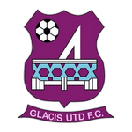
VS圣约瑟夫仅赛程23:30罗甲克卢日VS 加拉茨钢铁仅赛程
加拉茨钢铁仅赛程
23:30荷乙FC埃因霍温VS 瓦尔韦克仅赛程
瓦尔韦克仅赛程
00:00U17世界杯斐济U17VS摩洛哥U17仅赛程
00:00U17世界杯科特迪瓦U17VS乌兹别克斯坦U17仅赛程
00:00乌克兰超级联赛顿涅茨克矿工VS利维贝雷仅赛程
00:00保加利亚甲级联赛索菲亚九月 VS
VS 普罗夫迪夫火车头仅赛程
普罗夫迪夫火车头仅赛程
00:15伊拉克联赛杜胡克VS 埃尔比勒仅赛程
埃尔比勒仅赛程
01:00周六018意甲帕尔马VS罗马待分析
01:00厄瓜多尔甲级联赛山谷独立VS马卡拉仅赛程
01:00波兰超格利维采皮亚斯特VS凯尔采科罗纳仅赛程
01:30周六019英超纽卡斯尔VS阿森纳待分析
01:30周六020德甲沙尔克04VS斯图加特待分析
01:30周六021西甲塞维利亚VS贝蒂斯待分析
01:30德乙比勒费VS 马格德堡仅赛程
马格德堡仅赛程
01:30德乙达姆施塔VS 海登海姆仅赛程
海登海姆仅赛程
01:30沙特联吉达国民VS利雅得胜利仅赛程
02:00丹甲奥胡斯弗雷马德 VS
VS 霍布罗仅赛程
霍布罗仅赛程
02:00丹甲科灵 VS奥尔堡仅赛程
VS奥尔堡仅赛程
02:00丹麦超奥胡斯VS 灵比仅赛程
灵比仅赛程
02:00挪超莫尔德VS博德闪耀仅赛程
02:30瑞士甲尼永 VS
VS 维尔1900仅赛程
维尔1900仅赛程
02:30瑞士甲拉珀斯维尔 VS阿劳仅赛程
VS阿劳仅赛程
02:30瑞士甲洛桑乌契VS克里恩斯仅赛程
02:30瑞士甲纳沙泰尔VS 卡鲁日之星仅赛程
卡鲁日之星仅赛程
02:30罗甲康斯坦察法鲁尔VS克卢日大学仅赛程
03:00比乙利尔斯 VS
VS 洛克伦仅赛程
洛克伦仅赛程
03:00比乙布鲁日B队 VS
VS 维尔通仅赛程
维尔通仅赛程
03:00法乙南锡 VS
VS 第戎仅赛程
第戎仅赛程
03:00法乙圣旺红星 VS
VS 波城仅赛程
波城仅赛程
03:00法乙梅斯VS布洛涅仅赛程
03:00法乙甘冈 VS
VS 罗德兹仅赛程
罗德兹仅赛程
03:00法乙阿讷西VS 克莱蒙仅赛程
克莱蒙仅赛程
03:00英超国际杯伊普斯维奇U21VS波尔图U21仅赛程
03:00英超国际杯富勒姆 U21VS 葡萄牙体育B队仅赛程
葡萄牙体育B队仅赛程
03:00英超联赛杯伯恩利U21VS 弗利特伍德U21仅赛程
弗利特伍德U21仅赛程
03:00英超联赛杯利兹联 U21VS查尔顿U21仅赛程
03:00英超联赛杯卡迪夫城U21VS普利茅斯U21仅赛程
03:00英超联赛杯女王公园巡游者U21VS布莱克本U21仅赛程
03:00英超联赛杯布城U21 VS诺维奇U21仅赛程
VS诺维奇U21仅赛程
03:00英超联赛杯西布朗U21VS考文垂U21仅赛程
03:00荷乙乌德勒支青年队VS 埃门仅赛程
埃门仅赛程
03:00荷乙奥斯 VS罗达JC仅赛程
VS罗达JC仅赛程
03:00荷乙格拉夫VS马斯特里仅赛程
03:00荷乙海尔蒙特VS多德勒支仅赛程
03:00荷乙登博思 VS芬洛仅赛程
VS芬洛仅赛程
03:00荷乙福伦丹VS阿贾克斯青年队仅赛程
03:00荷乙维特斯VS阿尔克马尔青年队仅赛程
03:00荷乙赫拉克勒VSPSV埃因霍温青年仅赛程
03:00荷乙阿尔梅勒VS 布雷达仅赛程
布雷达仅赛程
03:00黑山甲级联赛莫尔纳 苏捷斯卡仅赛程
苏捷斯卡仅赛程
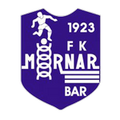
VS03:15瑞士甲伊韦尔东VS 温特图尔仅赛程
温特图尔仅赛程
03:30乌拉圭甲级联赛蒙得维的亚利物浦 VS蒙得维的亚流浪者仅赛程
VS蒙得维的亚流浪者仅赛程
03:30乌拉圭甲级联赛蒙得维的亚塞罗VS乌拉圭民族仅赛程
03:30乌拉圭甲级联赛蒙得维的亚竞技VS西班牙中央仅赛程
03:30德甲拜仁VS科隆仅赛程
03:30意乙维罗纳VS切塞纳仅赛程
03:30波兰超什切青波贡 VS
VS 史拉斯科仅赛程
史拉斯科仅赛程
03:30苏冠因弗内斯VS 艾尔联仅赛程
艾尔联仅赛程
03:30西乙FC安道尔 VS莱加内斯仅赛程
VS莱加内斯仅赛程
03:45周六022法甲摩纳哥VS欧塞尔待分析
03:45威尔士超级联赛兰迪德诺 VS巴里城仅赛程
VS巴里城仅赛程
03:45威尔士超级联赛卡迪夫都市大学VS阿曼福德仅赛程
03:45威尔士超级联赛卡那封VS康纳码头仅赛程
03:45威尔士超级联赛宾尼邦特VS哈弗福德韦斯特仅赛程
03:45威尔士超级联赛布里顿费里 VS霍利韦尔仅赛程
VS霍利韦尔仅赛程
03:45威尔士超级联赛弗林特城联 VS
VS 坎布里安克莱达赫仅赛程
坎布里安克莱达赫仅赛程
03:45威尔士超级联赛新圣徒 VS
VS 特雷费林仅赛程
特雷费林仅赛程
03:45威尔士超级联赛空中巴士VS 科尔温湾仅赛程
科尔温湾仅赛程
03:45比甲色格拉布鲁日VS 韦斯特洛仅赛程
韦斯特洛仅赛程
03:45法甲特鲁瓦VS勒阿弗尔仅赛程
04:00直布罗陀超级联赛欧罗巴角 VS蒙斯卡尔佩仅赛程
VS蒙斯卡尔佩仅赛程
04:00英甲巴恩斯利VS谢周三仅赛程
04:00西甲毕尔巴鄂 VS西班牙人仅赛程
VS西班牙人仅赛程
04:30巴拉圭甲级联赛亚美利亚人VS卢克尼奥体育仅赛程
04:45葡萄牙杯波尔图VS帕雷德斯仅赛程
05:00智利乙级联赛智利雷科莱塔VS圣地亚哥流浪者仅赛程
05:00智利甲科布雷萨尔VS奥达克斯意大利人仅赛程
05:30哥伦比亚甲级联赛麦德林独立VS圣菲仅赛程
07:00巴拉圭甲级联赛雷科莱塔VS瓜拉尼仅赛程
07:00阿甲萨斯菲尔德VS贝尔格拉诺仅赛程
07:30智利甲巴勒斯坦人 VS拉卡莱拉联合仅赛程
VS拉卡莱拉联合仅赛程
07:35哥伦比亚甲级联赛布卡拉曼加VS卡利美洲仅赛程